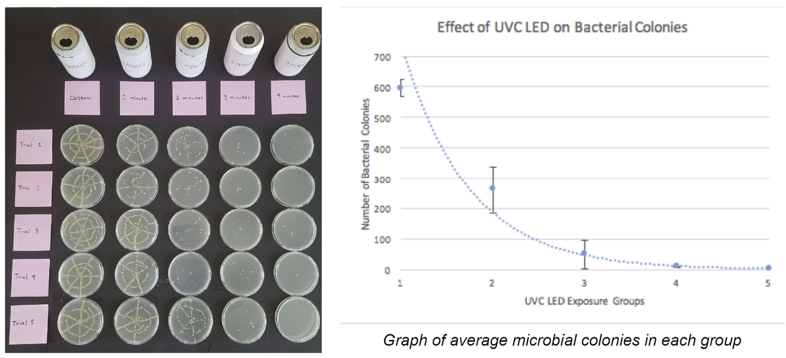

Engineered a solar-powered cap compatible with drink cans and water bottles to purify water in minutes and charge electronic devices in response to Florida hurricanes.
Over a billion people around the world lack access to safe drinking water. Tap water and electricity are compromised after natural disasters. Billions of plastic bottles are purchased a year and over half ends up in oceans or landfills. My project aims to clean water and charge devices in a sustainable, portable, and simple fashion.
UVC light can kill pathogens by forming thymine dimers in the DNA. My goal is to utilize a UVC LED (278 nm), situated inside a water bottle cap, to purify water.
Engineering Goals:The purpose of this board is to power on the UVC LED with the press of a button and automatically power off the UVC LED after the programmed time.
The UVC LED was tested on Wakulla Springs water. The water was poured into five equal-sized aluminum cans and each can was exposed to the UVC LED at different durations varying by one minute. By minute 4, the UVC LED had killed 99.46% of pathogens. The reduction in microbial colonies is displayed.
The solar power feature posed the biggest challenge to the project. The solar panel was not stable enough to provide consistent power to the Arduino, causing the Arduino to rapidly turn on and off from drawing more current than available.
An option was to have the solar panel charge a power bank and the power bank power the Arduino. This option would have been more cost-effective than the current prototype, but it was not efficient, not a self-contained bottle, and required users to carry a power bank. Instead, a solar charger and LiPo battery were used to provide stable power for the Arduino. A rechargeable battery meant that when the bottle was not in use, the bottle can simply sit outside and store energy for future use. The components were also able to fit inside the cap, allowing it to be one whole product, but the cost of the project doubled to $44. If purchased in bulk and straight from the manufacturer, the price would decrease and become more accessible to users. Cheaper parts could be used to accomplish the same task. Through the efforts of a nonprofit or business, the bottle could potentially be distributed to countries in dire need.
The cap can be paired with any standard aluminum can. This discovery was made when the length of the Arduino circuit positioned the UVC LED off-center. I realized that the opening of a drink can was also to the side, enabling the cap to fit perfectly on top. Aluminum cans are found in abundance nearly everywhere; reusing the can for water purification purposes reduces waste and reliance on the actual bottle. The solar feature can be used to charge an electronic device, which is especially helpful during an emergency situation or power outage.
This water bottle is targeted toward developing nations that may not have access to clean water. However, it is a simple and portable device that can be used by anyone. The bottle cap is multifunctional, encompasses a wide range of people, and accomplishes the engineering goals of being solar-powered, powering off automatically, and containing a storage unit.